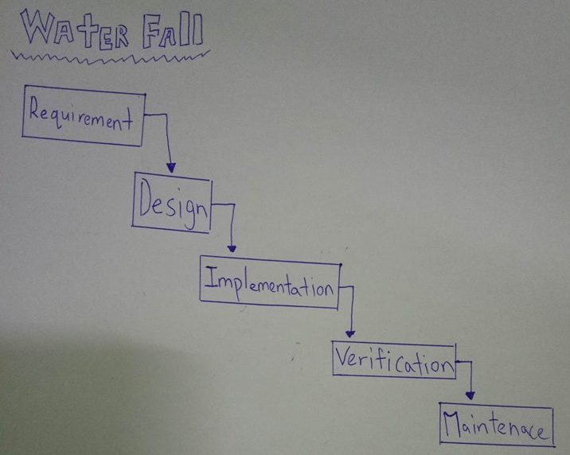
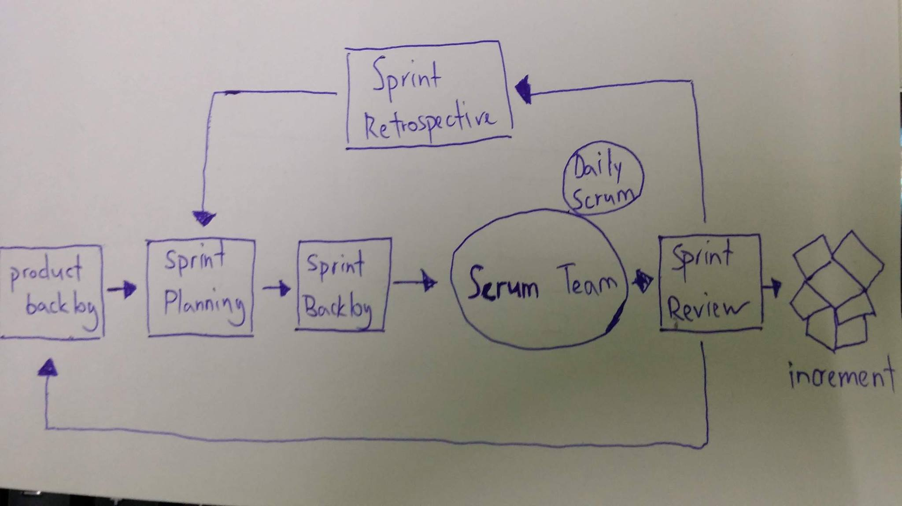

1) Identify and categories the different web sites and its functions.
Answer:
Nowadays,there are many different website in the internet, each website has different content, games website, online library, online shopping site, sociate internet site.
The game is very popular, some people will use cash in the game, the game site also is social networking sites and can also communicate in the game. Then, online library can read and find any book in the internet. Some books are copyrighted and must use cash to read on the internet.Online shopping site is very popular, people can quickly buy or order the items online, it is a way to do business on the internet.Online shopping site is very popular, people can quickly buy or order the items online, it is a methods to do business on the web. The last social networking site is also very popular, it is possible to make new friends, chat and record thing every day. Things also the most suitable young people because they like to share any life things on the internet.
<
2) Describe the term ‘target audience’
Answer:
The target audience is to attract interested people, such as products can attract people, if there is a toy store, then its target audience is the parents and anyone else with children in their lives. In addition, if ther is a cybercafe，then its target audience is the young and some people need Internet access so must understand what can attract the public in the market.
3) Describe the term ‘house style’
Answer:
House style is a set of rules that dictate how to format, it will manage such as the use of color, font style and size, and logo location. House style can be applied to many types of documents and communication methods, such as faxs, report, signage, memos.House style must to ensure consistency across all documents, support brand recognition and reduce the risk of mistakes.
4) Identify and explain the different page layout styles for different web sites.
Answer:
Each site has its own creative style so there are different layouts and each site has a different purpose. Layout style is to change some information position of the fixed, static, responsive, absolute and relative on the page, like some social internet sites have a lot of features on the page and the home page is usually friends status, photos, videos and so on. Then some movie sites, the home page is some of the film cover, the important is to be simple and easy to let people use.
5) Describe common development methodologies used by modern project managers and identify its advantages and disadvantages.
Answer:
Over the course of a project must have a defined in the process, so that the project can be a regular operation. First, Waterfall method is one of the most traditional and commonly used. The advantages of waterfall model are it is very simple and easy to understand, then water fall phases are processed and completed are at once in a time so it can save a lot of time. The disadvantages of waterfall are once an application is in the testing stage, it is not possible to go back and edit again.
Next, scrum is a highly prescriptive framework with specific roles and ceremonies, that is an iterative software development model used to manage complex software and product development, common sprints lasting one to two weeks long. At the end of each sprint, stakeholders and team members meet to plan next steps. Common with daily stand up meetings, the whole team knows who is doing what, then eliminating many misunderstandings and confusion. Issues are identified in advance, allowing the team to resolve them before they get out of hand. Team requires experience and commitment and with defined roles and responsible, the team needs to be familiar with Scrum principles to succeed. Project costs and timelines will be inaccurate if tasks are not well defined. If the initial goals are unclear, planning becomes difficult and sprints can take more time than originally estimated.


6) Propose tools/diagram used to establish well communication during requirement gathering phase.
Answer:
Github is tools/diagram used to establish well communication during gathering phase. Git also can let every member to do the adjustment of the codes at every time and it can record the history of date and time on when you doing the adjustment. If the part is already being modify, the others member can see the changing of the code and no need to adjust again. This can save a lot of time on no need rewrite the codes and bringing the benefit to software developer because it is simple and easy to be use.